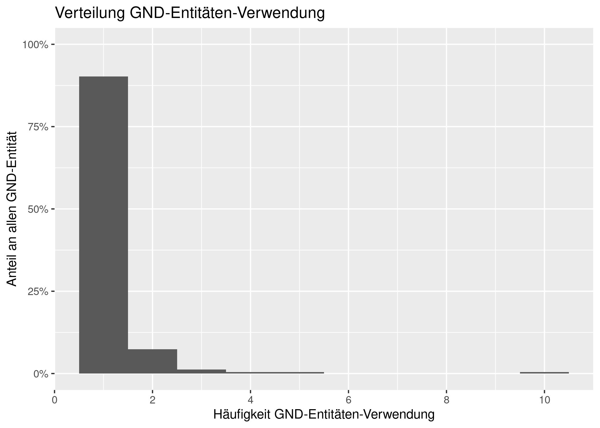

Datenanalyse mit RMarkdown
Beispielhaft werden in diesem Tutorial demonstriert, wie Datenanalysen mit RMarkdown mithilfe von pica durchgeführt wird. Datenabfrage mit pica und Datenanalyse mit R können so in einem gemeinsamen Dokument kombiniert werden.
# Setup: Globale Einstellungen für das Ausführen von Code-Blöcken durch knitr
knitr::opts_chunk$set(echo = TRUE, message = FALSE, dev = "jpeg", dpi = 300, fig.path = "plots/")
# Laden von R-Paketen
library(tidyverse) # beinhaltet u.a. readr, dplyr und ggplot2Datenabfrage
Zunächst erzeugen wir mit folgender Pica-Abfrage aus der Datei TEST.dat.gz eine CSV-Datei mit allen Tupeln aus der IDN des Titels und IDN der GND-Entität. Um die GND-Entitäten abzurufen, die mit einem Titeldatensatz verknüpft sind, müssen die Felder 041A/* mit dem select-Kommando ausgelesen werden. Sind mehrere GND-Entitäten in einem Titel-Datensatz vohanden, expandiert das select-Kommando diese automatisch, d.h., in der Ausgabe title_idn_gnd_idn.csv kommen auch IDN-Nummern von Titeln ggf. mehrfach vor (je eine Zeile pro GND-Entität).
$ pica select -s --no-empty-columns -H "idn_titel, idn_sw" "003@.0,041A/*.9" \
DUMP.dat.gz -o title_idn_gnd_idn.csvDas Einlesen der Daten in R erfolgt über die üblichen Funktionen, z.B. aus dem tidyverse-Unterpaket readr.
title_idn_gnd_idn <- read_csv("title_idn_gnd_idn.csv",
col_types = list(
idn_titel = col_factor(),
idn_sw = col_factor()))Das Einlesen der Daten kann auch ohne Zwischenspeichern des Outputs von pica select erfolgen. Die Ausgabe von pica select wird dann direkt als Stream an read_csvübergeben, was bei größeren Datenabfragen deutlich performanter ist:
title_idn_gnd_idn <- pipe(
'pica select -s --no-empty-columns -H \"idn_titel, idn_sw\" \"003@.0,041A/*.9\" DUMP.dat.gz') |>
read_csv(col_types = 'cc')Datenanalyse
Wir wollen die abgefragten Daten im Folgenden beispielhaft analysieren. Zunächst erzeugen wir eine zusammenfassende Zählstatistik:
count_summary <- title_idn_gnd_idn |>
summarise(
n_title = n_distinct(idn_titel),
n_terms = n_distinct(idn_sw)
)In dem so erzeugten Datensatz gibt es 245 verschiedene GND-Entitäten, die an mindestens einen von 103 verschiedenen Titel-Datensätzen vergeben wurden.
Als nächstes beantworten wir die Frage, wie viele GND-Entitäten pro Titel im Durchschnitt verwendet werden:
sw_per_title <- title_idn_gnd_idn |>
group_by(idn_titel) |>
summarise(n_sw = n())
card_d <- sw_per_title |>
summarise(
avg_count = mean(n_sw)
) |>
pull(avg_count)Im Mittel liegen 2.77 GND-Entitäten pro Titel vor.
Wir wollen nun die IDN-Nummern der am häufigsten verwendeten GND-Entitäten ausgeben:
gnd_term_freq <- title_idn_gnd_idn |>
group_by(idn_sw) |>
summarise(freq = n()) |>
arrange(desc(freq))
head(gnd_term_freq, n = 10) |>
knitr::kable()| idn_sw | freq |
|---|---|
| 040118827 | 10 |
| 040305503 | 5 |
| 040538818 | 4 |
| 041245113 | 3 |
| 041248538 | 3 |
| 041879635 | 3 |
| 040509265 | 2 |
| 040013073 | 2 |
| 118636405 | 2 |
| 040526925 | 2 |
Datenvisualisierung
Über alle Schlagwörter betrachtet sieht die Verteilung der GND-Entitäten-Verwendung wie folgt aus:
g <- ggplot(gnd_term_freq, aes(x = freq)) +
geom_histogram(aes(y = after_stat(density)), binwidth = 1) +
scale_y_continuous(labels = scales::percent, limits = c(0,1)) +
scale_x_continuous(breaks = c(0,2,4,6,8,10)) +
xlab("Häufigkeit GND-Entitäten-Verwendung") +
ylab("Anteil an allen GND-Entitäten") +
ggtitle("Verteilung GND-Entitäten-Verwendung")
g
Das Histogramm zeigt, dass die meisten GND-Entitäten nur einmal verwendet werden. Einzelne Terme werden aber auch bis zu 10-mal verwendet.
Eine andere Visualisierungsform des gleichen Sachverhalts ist folgende:
gnd_term_freq <- gnd_term_freq |>
mutate(index = 1:n())
ggplot(gnd_term_freq, aes(x = index, y = freq)) +
geom_point() +
scale_y_log10() +
ylab("Häufigkeit je GND-Entität") +
xlab("Index GND-Entitäten (sortiert nach Häufigkeit)") +
ggtitle("Long-Tail-Darstellung")